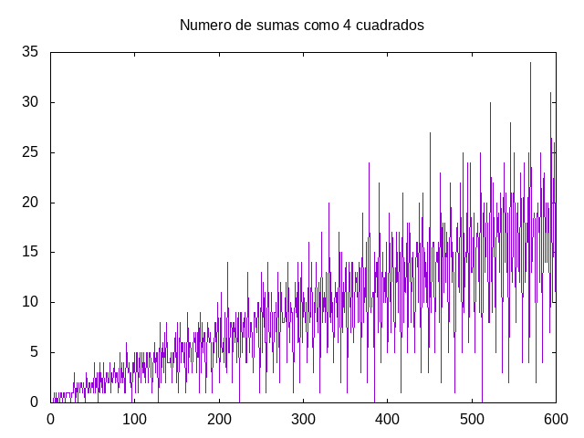

Sumas de cuatro cuadrados
El número 42 es una suma de cuatro cuadrados de números enteros positivos ya que
42 = 16 + 16 + 9 + 1 = 4² + 4² + 3² + 1²
Definir las funciones
sumas4Cuadrados :: Integer -> [(Integer,Integer,Integer,Integer)] graficaNumeroSumas4Cuadrados :: Integer -> IO ()
tales que
- (sumas4Cuadrados n) es la lista de las descompociones de n como suma de cuatro cuadrados. Por ejemplo,
sumas4Cuadrados 42 == [(16,16,9,1),(25,9,4,4),(36,4,1,1)] sumas4Cuadrados 14 == [] length (sumas4Cuadrados (5*10^4)) == 260
- (graficaNumeroSumas4Cuadrados n) dibuja la gráfica del número de descomposiciones en sumas de 4 cuadrados de los n primeros. Por ejemplo, (graficaNumeroSumas4Cuadrados 600) dibuja 
Soluciones
import Graphics.Gnuplot.Simple -- 1ª definición de sumas4Cuadrados -- ================================ sumas4Cuadrados :: Integer -> [(Integer,Integer,Integer,Integer)] sumas4Cuadrados n = [(a^2,b^2,c^2,d) | a <- [1..n] , b <- [a..n] , c <- [b..n] , let d = n - a^2 - b^2 - c^2 , c^2 <= d , esCuadrado d] -- (esCuadrado x) se verifica si x es un número al cuadrado. Por -- ejemplo, -- esCuadrado 25 == True -- esCuadrado 26 == False esCuadrado :: Integer -> Bool esCuadrado x = x == y * y where y = raiz x -- (raiz x) es la raíz cuadrada entera de x. Por ejemplo, -- raiz 25 == 5 -- raiz 24 == 4 -- raiz 26 == 5 raiz :: Integer -> Integer raiz x = floor (sqrt (fromIntegral x)) -- 2ª definición de sumas4Cuadrados -- ================================ -- Los intervalos de búqueda en la definición anterior se pueden reducir -- teniendo en cuenta las siguientes restricciones -- 1 <= a <= b <= c <= d -- n = a² + b² + c² + d² >= 4a² ==> a <= sqrt (n/4) -- n - a² = b² + c² + d² >= 3b² ==> b <= sqrt ((n-a²)/3) -- n - a² - b² = c² + d² >= 2c² ==> c <= sqrt ((n-a²-b²)/2) sumas4Cuadrados2 :: Integer -> [(Integer,Integer,Integer,Integer)] sumas4Cuadrados2 n = [(a^2,b^2,c^2,d) | a <- [1 .. floor (sqrt (fromIntegral n / 4))] , b <- [a .. floor (sqrt (fromIntegral (n-a^2) / 3))] , c <- [b .. floor (sqrt (fromIntegral (n-a^2-b^2) / 2))] , let d = n - a^2 - b^2 - c^2 , c^2 <= d , esCuadrado d] -- Comparación de eficiencia -- ========================= -- La comprobación es -- λ> length (sumas4Cuadrados 300) -- 11 -- (7.93 secs, 11,280,814,312 bytes) -- λ> length (sumas4Cuadrados2 300) -- 11 -- (0.01 secs, 901,520 bytes) -- Definición de graficaConvergencia -- ================================== graficaNumeroSumas4Cuadrados :: Integer -> IO () graficaNumeroSumas4Cuadrados n = plotList [ Key Nothing , Title "Numero de sumas como 4 cuadrados" , PNG "Sumas_de_cuatro_cuadrados.png" ] [length (sumas4Cuadrados2 k) | k <- [0..n]] -- Definición de esSuma4Cuadrados -- ============================== -- (esSuma4Cuadrados n) se verifica si n es la suma de 4 cuadrados. Por -- ejemplo, -- esSuma4Cuadrados 42 == True -- esSuma4Cuadrados 11 == False -- esSuma4Cuadrados 41 == False esSuma4Cuadrados :: Integer -> Bool esSuma4Cuadrados = not . null . sumas4Cuadrados2